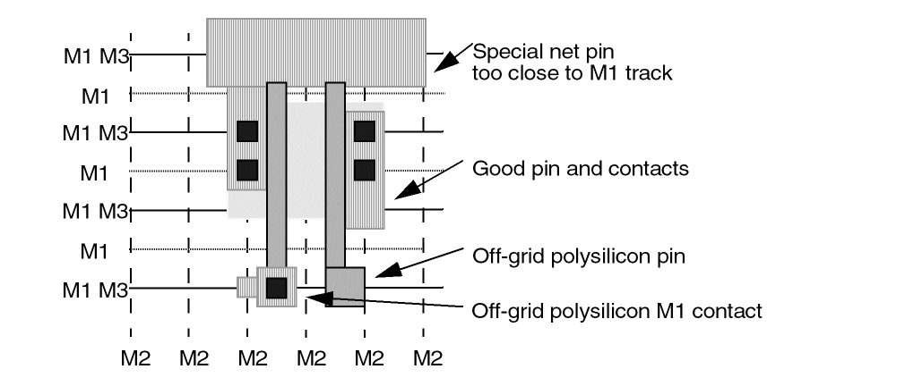

Routing Issues in Pins
-
The pin geometry interferes with the adjacent grid without covering it.
The problem with off-grid pins that do not cover grid points but are too close to allow routing, is that the global router will not see the track as obstructed. The global routing scores will not consider that the track is blocked by the off-grid pin and will give you over-optimistic results. -
Vias (in pins) are not centered on the routing grids for its layers.
If off-grid pins exist, and the router has been set to allow off-grid pins, then grids are created by the router. Any pin that does not cover the routing grid with enough area to place a via is considered off-grid, and a track is created through the center of the pins. Off-grid tracks will slow the router by requiring more memory. Routing is slower because wires on each off-grid track interfere with adjacent on-grid routing. -
Special pins need not be on-grid, but should follow blockage rules.
The following figure shows potential routing problems.

Related Topics
Guidelines for Modeling Pins in a Cell Library
Return to top